---恢复内容开始---
本篇笔记聊聊Git的安装和使用教程
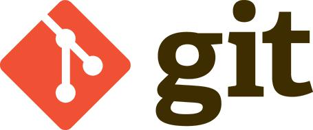
一、认 识 Git
什么是Git？
Git是一个开源的分布式版本控制系统，可以有效、高速地处理从很小到非常大的项目版本管理。Git 是Linus Torvalds 为了帮助管理 Linux 内核开发而开发的一个开放源码的版本控制软件。
Git是一个版本控制工具。
Github是非常有名的在线版本管理网站（速度比较慢）。
Oschina中国版本的github，（旗下的的码云地址：gitee.com，速度快）
ssh key我们使用ssh登录服务器时，一般常见的会使用用户名/密码方式登录，使用ssh key可以实行免密码登录。（ssh是一种网络协议，用于计算机之间的加密登录）
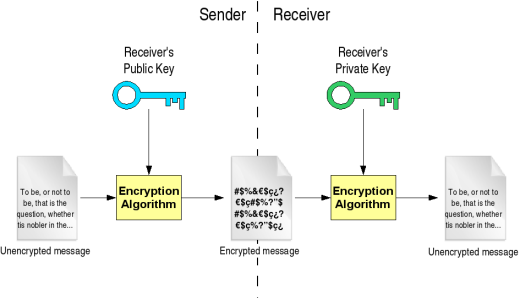
即使公钥在网上被截获，如果没有与其匹配的私钥，也无法解密，所截获的公钥是没有任何用处的Public-key cryptography (公开密匙加密）
Git功能如下：
1、从服务器上克隆完整的Git仓库（包括代码和版本信息）到单机上。
2、在自己的机器上根据不同的开发目的，创建分支，修改代码。
3、在单机上合并分支。
4、看主开发者的反馈，如果主开发者发现两个一般开发者之间有冲突（他们之间可以合作解决的冲突），就会要求他们先解决冲突，然后再由其中一个人提交。如果主开发者可以自己解决，或者没有冲突，就通过。
Git的特点：
1、分支灵活性：用户可以随时创建、合并、删除分支，多人实现不同的功能，可以创建多个分支进行开发，之后进行分支合并，这种方式使开发变得快速、简单、安全。
2、保存点：Git的保存点可以追踪源码中的文件, 并能得到某一个时间点上的整个工程项目的状态；可以在该保存点将多人提交的源码合并, 也可以回退到某一个保存点上
3、Git的分支和合并：分支模型是Git最显著的特点，因为这改变了开发者的开发模式，SVN等版本控制工具将每个分支都要放在不同的目录中，Git可以在同一个目录中切换不同的分支。
二、 Git客服端安装
下载
博客Git版本是2.14.0。我们可以从官网下载最新的Git客服端：Git点击下载
安装
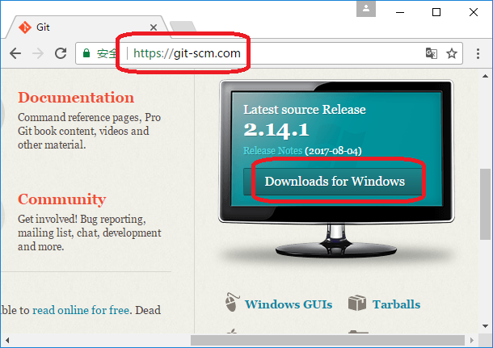
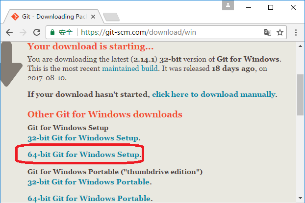
下载完成后打开安装包
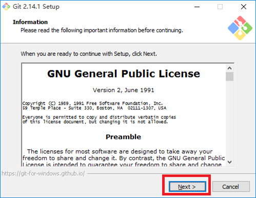
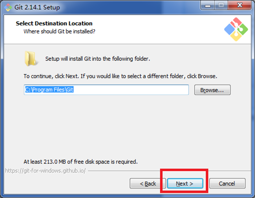
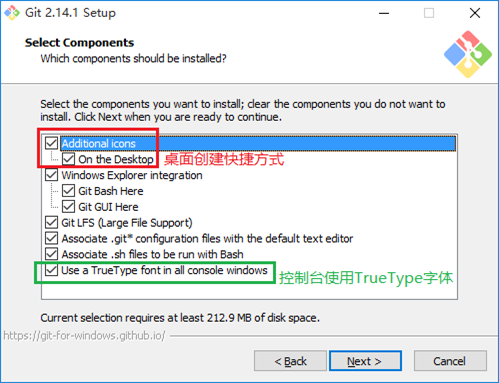
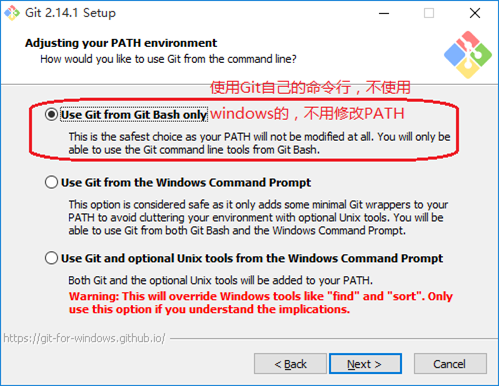
OpenSSL 是一个安全套接字层密码库，囊括主要的密码算法、常用的密钥和证书封装管理功能及SSL协议，并提供丰富的应用程序供测试或其它目的使用。
OpenSSL是一个基于密码学的安全开发包，OpenSSL提供的功能相当强大和全面，囊括了主要的密码算法、常用的密钥和证书封装管理功能以及SSL协议。
但实际上漏洞是很多的。
OpenSSL提供的CA应用程序就是一个小型的证书管理中心（CA），实现了证书签发的整个流程和证书管理的大部分机制。
OpenSSL可以生成ca-bundle文件，作用为描述证书链
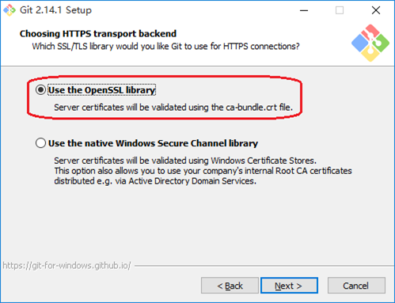
让应用程序使用OpenSSL类库来实现服务器验证
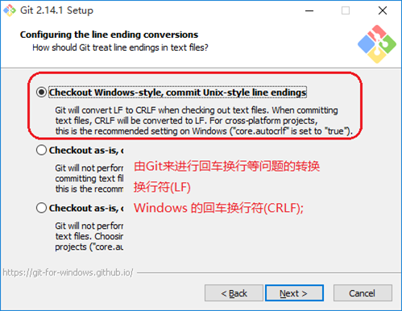
由Git来进行回车换行等问题的转换，换行符(LF) Windows 的回车换行符(CRLF);
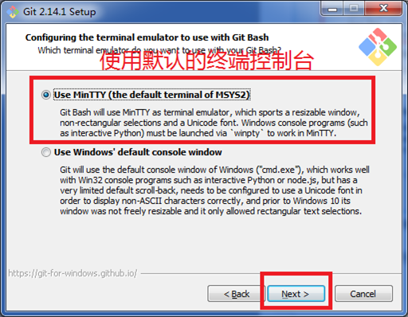
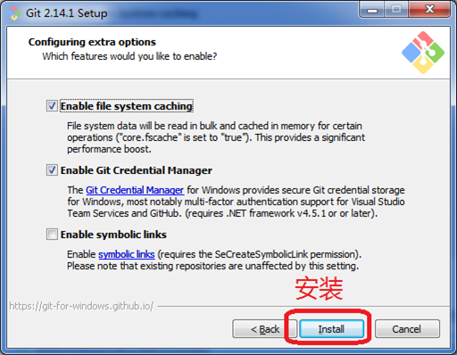
安装完成后，就可以看到桌面上的快捷方式
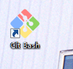
见到下面的界面就表示安装成功了
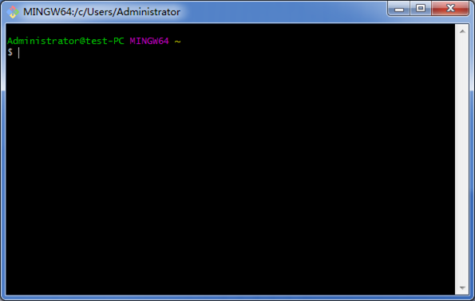
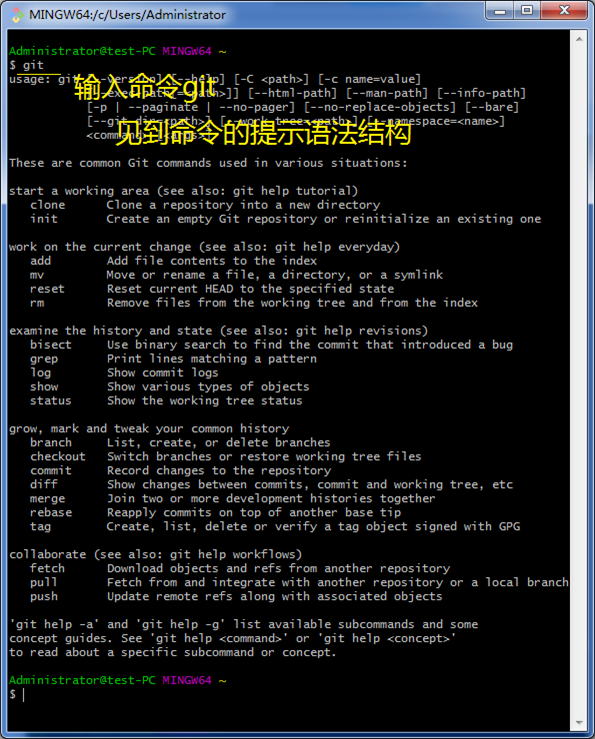
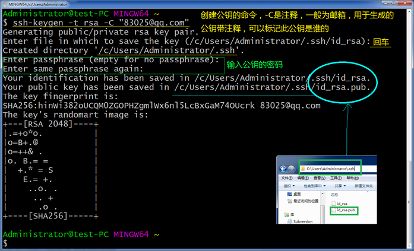
这样默认会在本地的～/.ssh目录下生成id_rsa，id_rsa.pub两个文件 ：id_rsa是私钥 id_rsa.pub是公钥。
接下来我们打开码云 官方网站
什么是码云？详细请点这
码云是开源中国社区2013年推出的基于 Git 的完全免费的代码托管服务，这个服务是基于 Gitlab 开源软件所开发的，我们在 Gitlab 的基础上做了大量的改进和定制开发，目前已经成为国内最大的代码托管系统，致力于为国内开发者提供优质稳定的托管服务。
点击注册一个账号
这时你的邮箱会发来一份邮件
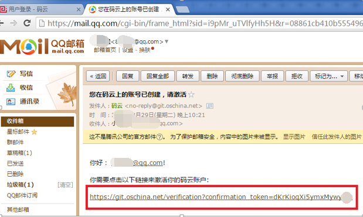
点击完善资料
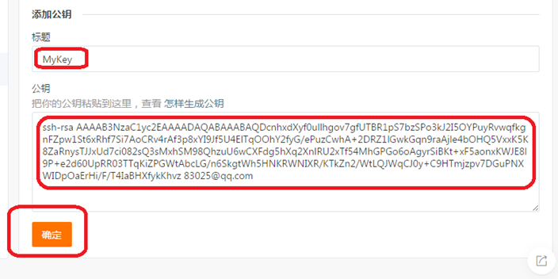
id_rsa.pus公钥的所在位置上面有讲到，如果打不开的文件请用excel打开即可。
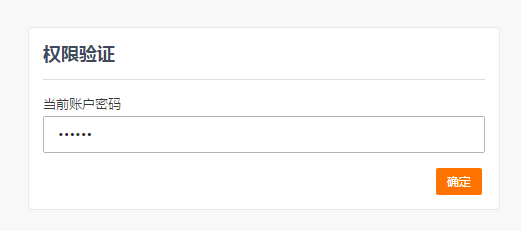
Gitee帐号的密码，验证才让添加
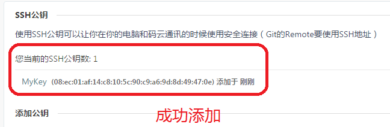
成功添加后，见到刚刚添加的MyKey
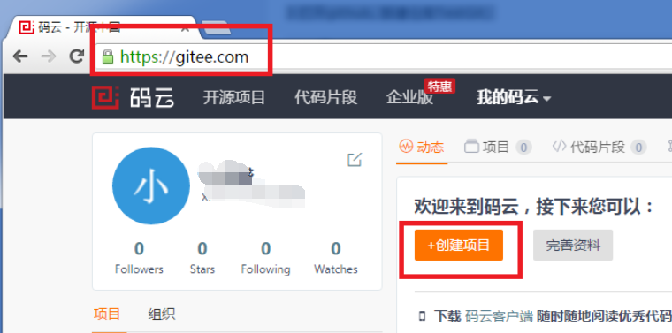
回到首页上，点击创建项目。
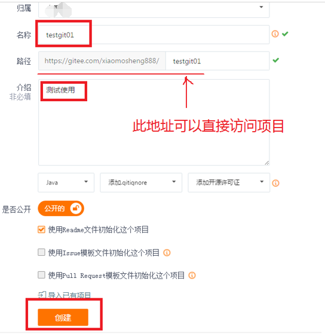
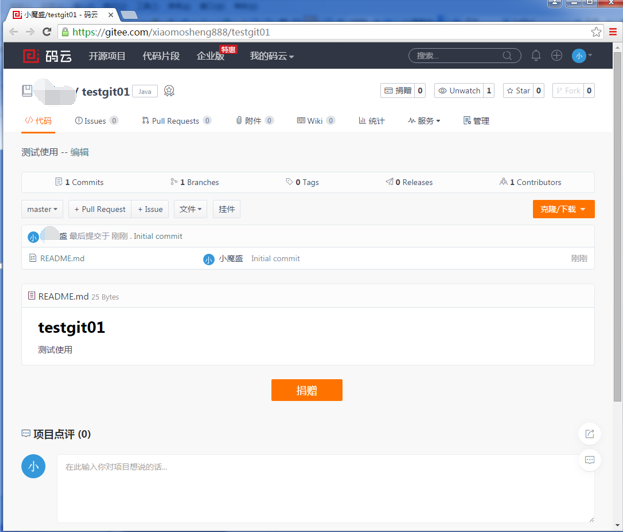
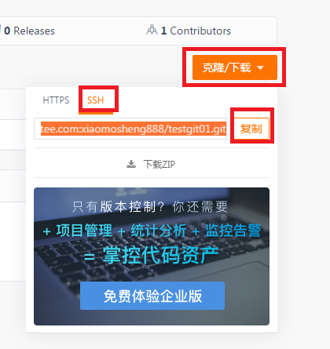
复制SSH地址
创建一个文件夹
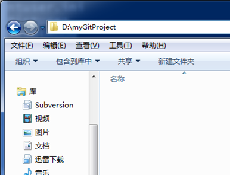
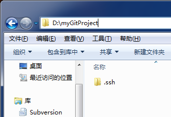
把密钥目录复制进去，便于git能够访问
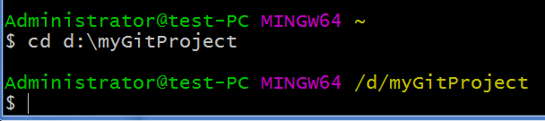
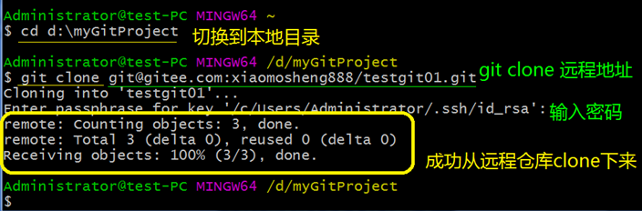
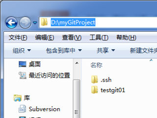
Testgit01创建成功
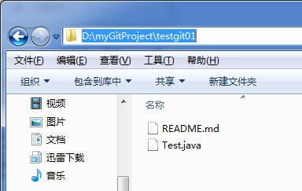
本地建立Test.java 测试上传
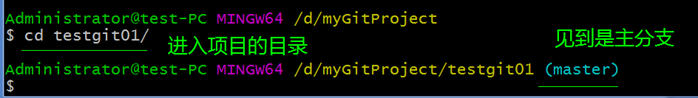
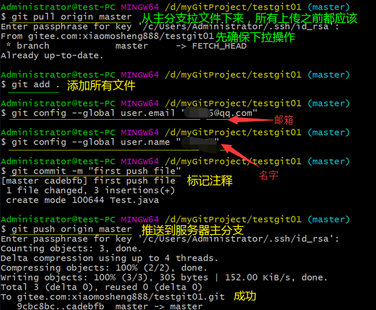
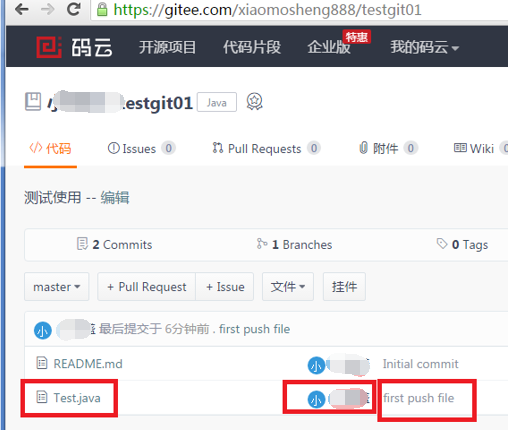
服务器上已经见到刚刚上传的文件，以及注释等信息。